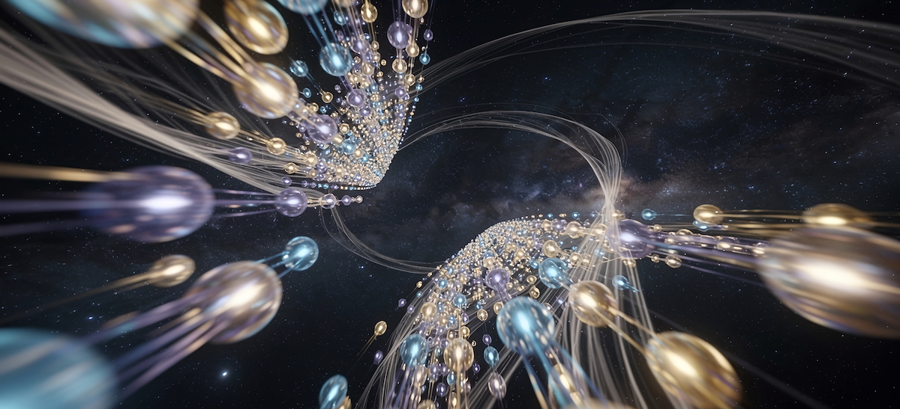
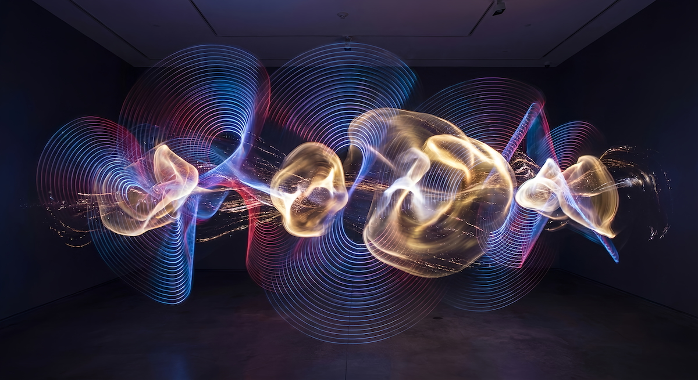

Intro
WMO Orchestra is a five-movement experimental music work investigating phase, time, pitch, erosion, and interference as compositional conditions rather than expressive goals. Instead of thematic development or harmonic resolution, each movement applies a minimal set of constraints and examines how perceptual coherence arises through repetition, interference, and memory.
The work is presented as a recorded album, accompanied by a written essay that situates the piece within broader aesthetic and artistic discussions.
Work

WMO Orchestra unfolds across five movements. Each movement is self-contained: it begins without introduction and ends without fade. There is no preparatory framing within the sound itself. What exists does so only while it is sounding.
Movement I - Phase
Identity through displacement
A single minimal pattern is repeated across multiple entries, each starting at a different point in its cycle. No global alignment is enforced. Identity emerges not through repetition, but through displacement.
Movement II - Temporal
Local time without a shared centre
A newly instantiated minimal pattern is subjected to variable traversal speeds. All layers share a common temporal field, yet each experiences time locally. Complexity arises through temporal interference rather than added material.
Movement III - Pitch
Register as relational field
Pitch is treated as a relational field rather than a harmonic destination. Identical structures are projected across different registers, allowing resonance and colour to emerge as by-products of overlap.
Movement IV - Erosion
Structural loss through compression
Successive lines are anchored at fixed points rather than restated in full. As layers accumulate, overlap and self-interference cause articulation to compress and fold back onto itself. The pattern remains present, but its capacity to be fully stated progressively diminishes. Recognition increasingly depends on memory and expectation rather than direct perception.
Movement V - Residue
Coherence without authority
The final movement alters the behaviour of the work rather than extending earlier procedures. Material is introduced in response to what has already formed rather than according to a fixed sequence. Coherence becomes perceptible not because it is constructed, but because accumulated context allows relations to stabilise briefly.
Method
The work was composed manually using a minimal piano interface and stock instruments, without score, metronome, or external system. Instrument choice and voicing were guided by availability rather than orchestral optimisation.
The aim was not to refine material, but to observe how structure behaves when introduced with minimal aesthetic intervention. Despite this restraint, the resulting work remains listenable and internally coherent, a result that prompted further reflection rather than resolution.
An accompanying essay expands on the work from an aesthetic perspective, focusing on perception, memory, authorship, and the limits of formal control. Rather than proposing a new theory, the text engages existing artistic and philosophical discussions by treating the composition itself as an enacted question. - Download essay (PDF).
Credits

All music and associated materials in this section are composed, written, produced, and performed by Rodrigo Jazinski.